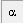

Menú Carta
 El menú Carta us permet configurar la presentació dels mapes segons les vostres necessitats, ràpidament i fàcilment. Si us cal una configuració més detallada, consulteu Configuració → Mapa, coordenades
El menú Carta us permet configurar la presentació dels mapes segons les vostres necessitats, ràpidament i fàcilment. Si us cal una configuració més detallada, consulteu Configuració → Mapa, coordenades
Sistema de coordenades
Ací podreu escollir el sistema de coordenades entre :
- Coordenades Equatorials
- Coordenades Azimutals
- Coordenades Eclíptiques
- Coordenades Galàctiques
Això funciona com el grup d'icones del Grup sistema coordenades de la barra lateral esquerra.
Amb Configuració→Carta, Coordenades→Sistema de coordenades podeu configurar també l'equinocci i l'època.
Transformació
Si desitgeu fer mirall horitzontal o vertical o bé girar un angle el mapa, podeu fer-ho amb les entrades del submenú. La rotació es fa a intervals de 15 graus.
També es pot fer amb les icones de baix de la barra d'eines esquerra en el grup transformació . Podreu fer rotacions amb intervals de 1 grau fent clic a aquestes icones tot mantenint premuda la tecla de majúscules.
Camp de visió
Aquí podeu variar l'amplitud en graus del camp de visió a un valor predefinit.
També es pot fer amb les icones de dalt de la barra d'eines dreta Grup camp de visió.
Podeu canviar els valors predeterminats dels camps de visió, segons les vostres preferències, en Configuració → Carta, coordenades → Camp de visió.
Mostra l'horitzó
Si desitgeu centrar el mapa en un dels quatre punts cardinals, trieu-ho en el submenú:
- Nord
- Sud
- Est
- Oest
També podeu usar les icones de baix de la barra d'eines dreta Grup horitzó. O bé simplement teclejant les inicials n, s, e, w.
L'ús d'aquests mètodes farà que el sistema de coordenades sigui l'altazimutal.
Per llegir sobre com mostrar el vostre horitzó local, feu clic aquí
Mostra els objectes
Aquí podeu escollir quins objectes voleu que es mostrin. Activeu les caselles de les entrades desitjades en el submenú:
- Mostra els estels
- Mostra els objectes de cel profund
- Mostra les imatges
- Mostra les línies
- Mostra els planetes
- Mostra els asteroides
- Mostra els cometes
- Mostra la Via Làctia
Això funciona com les icones Grup d'objectes A o Grup d'objectes Bde la banda esquerra de la barra d'eines d'objectes.
Aquestes funcions se situen igualment amb Llista dels objectes, Presentació línies i en les pestanyes del Sistema solar.
I en Línies
És important que hagueu configurat el dia/hora i Observatori per tal de veure correctament els objectes.
Línies/Graelles
Si voleu veure o no graelles o línies sobre el mapa, activeu o desactiveu les entrades corresponents en el submenú:
- Mostra la graella de coordenades
- Afegeix la graella equatorial
- Mostra les figures de les constel¡lacions
- Mostra els límits de les constel¡lacions
- Mostra l'equador galàctic
- Mostra l'eclíptica
- Mostra les marques del buscador (camps des oculars)
Això funciona com les icones  i de la barra d'eines d'objectes, sobre el mapa.
i de la barra d'eines d'objectes, sobre el mapa.
Aquestes entrades es troben també en Configuració→Presentació Presentació Línies i també les dimensions amb què es mostren els oculars i CCDs en Presentació oculars i en Captadors CCD.
Podeu configurar l'espaiat de les graelles des del menú Configuració → Carta, coordenades → la pestanya Espaiat de les graelles
{kind=link}
Mostra les etiquetes
Marqueu aquesta entrada per veure totes les etiquetes definides en el menú:
Configuració → Presentació → Presentació etiquetes
Això funciona com la icona  del grup d'imatges en la barra d'eines d'objectes.
{kind=link}
Veure sota de l'horitzó
Marqueu aquesta entrada per veure els objectes situats sota de l'horitzó en l'hora i situació que teniu fixades, tal com si el cel fos transparent.
Només funciona amb coordenades altazimutals.
Això també es pot fer amb la icona  en el Grup marques de la barra d'eines d'objectes.
en el Grup marques de la barra d'eines d'objectes.
Mostra/amaga imatge DSS
Si prèviament havíeu carregat una imatge formatejada FITS, amb aquesta opció podeu fer que es mostri o no. Una funció interessant és la icona  imatge parpellejant, per fer que la imatge sobreposada sigui intermitent respecte del contingut original del mapa.
imatge parpellejant, per fer que la imatge sobreposada sigui intermitent respecte del contingut original del mapa.
Per saber més com carregar una imatge FITS, feu clic aquí.
Per ampliar informació sobre la configuració de l'ús del DSS, feu clic aquí.
I per llegir més sobre la configuració dels recursos per baixar de la xarxa aquestes imatges, premeu aquí.
Per mostrar o amagar la imatge també podeu usar la drecera CTRL-I.
Nombre d'estels
Des del menú: Carta → Nombre d'estels → [Més estels/Menys estels]
Això funciona igual que amb les icones  o
o  en el grup magnitud de la barra principal.
en el grup magnitud de la barra principal.
Aquí podeu triar de mostrar el nombre d'estels i objectes del sistema solar variant la magnitud que es mostra en intervals de 0.5
Relacionat amb:
Configuració → Carta, Coordenades; la pestanya “Filtre d'objectes”
Quan la casella Filtra els estels no està activada, aquesta funció dels botons del grup de magnitud per augmentar o disminuir el nombre d'estels no és operativa.
Nombre objectes cel profund
Des del menú: Carta → Nombre objectes cel profund → [Més cel profund/Menys cel profund]
Això funciona igual que amb les icones  o
o  en el grup magnitud de la barra principal.
en el grup magnitud de la barra principal.
Aquí podeu triar de mostrar el nombre d'objectes de cel profund variant la magnitud que es mostra en intervals de 0.5
Relacionat amb:
Configuració → Carta, Coordenades; la pestanya “Filtre d'objectes”
Quan la casella Filtra objectes cel profund no està activada, aquesta funció dels botons del grup de magnitud per augmentar o disminuir el nombre d'objectes de cel profund no és operativa.
Obté imatge DSS
Això fa el mateix que la icona  en el grup d'imatges de la barra d'objectes.
en el grup d'imatges de la barra d'objectes.
Podeu descarregar imatges formatejades FITS des de RealSky, el lloc Digital Sky Survey (DSS) en línea, des del vostre directori SAC d'imatges [directori d'instal.lació del programa/data/pictures/sac o des de qualsevol altra font.
La majoria d'usuaris usaran aquesta funció per carregar una imatge FITS des del Digital Sky Survey (DSS). La mida de les imatges que demaneu està limitada pel camp de visió. Usualment, no podreu obtenir imatges quan el camp de visió de Cartes del Cel sigui més gran de dos segons d'arc. Com més gran sigui el camp de visió, més fàcil serà que la vostra demanda es cancel¡li o no sigui suportada en absolut pel servidor. Heu de tenir en compte que per generar una imatge el servidor fa treballar molt la CPU, us cal tenir paciència.
Si teniu connexió oberta a Internet, podeu evitar prémer el botó de descàrrega cada vegada que demaneu una imatge dels recursos en línia. Per fer-ho, cal que tingueu desmarcada la casella “Demana confirmació abans de connectar a Internet” en la primera pestanya de la caixa de diàleg que s'obté del menú Configuració → Internet.
Per llegir més sobre com mostrar aquestes imatges, feu clic aquí.
Per aprofundir sobre la configuració de l'ús de RealSky i DSS, feu clic aquí.
I per ampliar informació sobre la configuració dels recursos del DSS per baixar aquestes imatges, premeu aquí.